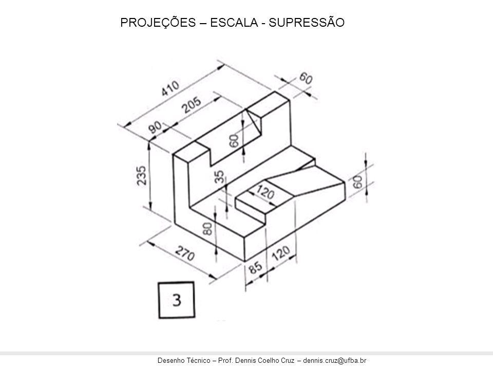
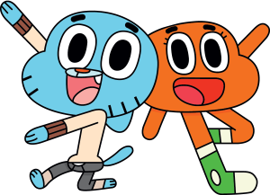
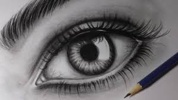
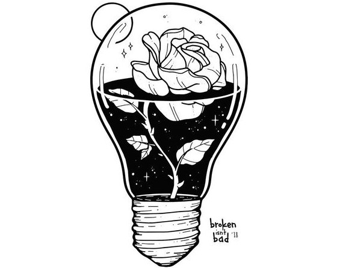

Desenho é uma forma de manifestação da arte, o artista transfere para o papel imagens e criações da suaimaginação. É basicamente uma composição bidimensional (algo que tem duas dimensões) constituída por linhas,pontos e forma. É diferente
da pintura e da gravura em relação à técnica e o objetivo para o qual é criado.O desenho é utilizado nos mais diversos segmentos profissionais, tornando a arte diversificada a diferentes contextos.

Existe o desenho de projetos, onde é trabalhada toda estrutura e detalhe de uma construção, há também o desenho de composição pictórica, quando o artista expressa no papel situações que estão ocorrendo em tempo real, esse tipo de desenho é
bastante utilizado em tribunais durante julgamentos, em que a presença de câmeras fotográficas ou algo do gênero não é permitida, os desenhistas tentam retratar de forma mais real possível todos os momentos e detalhes do julgamento, para
que quando outras pessoas olharem o desenho tenham a sensação de que estavam presentes na cena.
tipos de desenho
desenho de memorização
Desenho de memória é o desenho produzido, utilizando apenas as imagens que estão guardadas na mente ou memória. Trata-se de um esboço rápido de uma idéia inicial, desenhado após um período de atenta observação do objeto em questão
a pratica de desenho de memorisacao aumenta o "vocabolario visual" permintindo pois se memorisa detalhes de cada objeto i e algo muito trabalhado em desenhistas proficionais
-- Thiago (Cras Conversa)
desenho de observação
O Desenho de observação é aquele onde utilizamos um modelo real para desenvolver a percepção visual - capacidade de observação de forma, luz e volumes.
Para conseguirmos um bom desempenho no desenho é fundamental uma observação cuidadosa. Começa assim a formação do verdadeiro desenhista: aprendendo a observar!
desenho criativo
Aqui, o desenhista vai buscar elementos da realidade para “formar uma nova realidade”. Normalmente, é o tipo de desenho mais difícil, porém, o mais prazeroso. Também pode ser chamado de desenho abstrato, pois, representa uma figuração,
uma representação da realidade, e não da realidade em si.
Neste caso, o desenho pode ser classificado de duas formas bem distintas: dirigido ou livre.
desenho tecnico
O desenho técnico é um ramo especializado do desenho, caracterizado pela sua normalização e pela apropriação que faz dos conteúdos de Geometria Descritiva Perspectivas Perspectiva isométrica Perspectiva cavaleira Perspectiva do arquitet
Desenho Geométrico Tal forma de representação gráfica é utilizada como base do projeto na arquitetura, no design e na engenharia. O desenho técnico é a ferramenta necessária para a interpretação e representação de um projeto, por
ser o meio de comunicação entre a equipe de criação e a de fabricação (ou de construção); nesse contexto ele pode ser interpretado como a linguagem gráfica que representa as formas, dimensões e posicionamento de objetos e suas
relações com o meio.
estilos mais populares
existem varios estilos de desenho entre as carquiteristicas que podem varia as principais sao nivel de abristacao , traco , percepcao de cores irei falar aqui dos tres principais estilos dos quais
se derivao varios outros
cartun

caracterizado por Formas finais serem muito próximas das iniciais. Ângulos, curvas e formas geométricas são bem conservados posuem um traço mais marcado com linha mai grossas e cores chapadsas e um nivel medio de abristacao
realismos

caracterizado por uma baixa abristacao e um estilo que tende a ser mais fiel a realidade o posivel com tracos finos e varios gradiente de cores alem de ter volumes bem trabalhados com os conseitos de luz e sonbra e Perspectiva
abstrado

este e um estilo mais abrangente onde os tracos e escolha de core varia muito de artistas para artistas , tende ir alem da realidade e expresar conceitos complexos